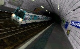

L'interview d' Ecstasy par Doctor Yes
Traduction anglaise : Deepmind
Correction : Lluvia
Merci à Ecstasy
Préface : Ecstasy est un des coders
du groupe NomaD. La semaine dernière, coup de fil improvisé
à mon provider, rendez vous semi-confidentiel dans un channel IRC,
Ecstasy se dévoile. Ok sa démo Squeezed
a "troué le cul" de plus d'un mais le 'friendship' et
la 'simplicité' se perçoives autour de lui. Mon micro en
place, lumière, ambiance et petits fours, on tourne..
OJ> Bonjour Ecstasy, peux- tu te présenter et présenter ton groupe
?
E> Bonjour Doc, je m'appelle Stephane Allegro, mon surnom hors scène
c'est Clint, et j'ai déjà 23,75 ans :) mon groupe principal
c'est NomaD, fondé grâce a Z il faut bien le dire, avec qui on s'est
bien entendus lorsque Pulpe était actif !
(D'ailleurs bonjour à mes très chers Pulpe-men !)
OJ> Qu'est ce qui t'a fait entrer
dans le scène demo ?
E> Héhé, la première demo que j'ai vu c'était
Unreal, puis 1 an après seulement j'ai découvert Second
Reality !
C'est là que je me suis dit :"wow" faut que je fasse des demos...
j'ai donc fait mes débuts tout seul, commençant directos
à faire de la 3D et puis j'ai découvert Internet, Twoface
m'a fait connaitre aXs et hop là, je suis rentré dans Pulpe, et
pis me vlà :)
Mais au début, ce qui m'a donné envie de coder, c'est le jeu Stunt
Machine sur mon CPC6128 :)
OJ> Directement par de la 3D
? Justement, que penses-tu de cette utilisation massive?
E> Oui, enfin j'ai fait de la 3D au tout début à
cause de ce jeu qui me faisait baver... mais j'ai vite compris mon malheur
et j'ai fait une pause 2D avec les truc  classiques...
Personnellement je ne m'en lasse pas quand c'est bien fait et très
propre, avec plein de belles couleurs
classiques...
Personnellement je ne m'en lasse pas quand c'est bien fait et très
propre, avec plein de belles couleurs
( genre Doomsday ou TBL ). Cependant, c'est clair que les démos
qui m'ont le plus impressionné, c'est Claudia ou Genocyd, et je fais tout
pour que NomaD ponde des demos avec *histoire* ! ( z'avez entendu les
NomaDs ! ;) )
 E> Tout :) La musique, les images, les
gens, la compétition, mettre les gens en Ecstase devant leur ordinateur
(d'où mon nickname d'ailleurs ;) etc...
E> Tout :) La musique, les images, les
gens, la compétition, mettre les gens en Ecstase devant leur ordinateur
(d'où mon nickname d'ailleurs ;) etc...
OJ> Que penses-tu de ceux qui
disent que la scène démo est déjà morte ou qu'elle va l'être
bientôt ?
E> Ahah, ça doit
faire plus d'un an que des gens disent ça ! Et on est toujours
la... Ceux qui disent ça sont ceux qui n'y ont aucun interêt.
Mais je ne crois pas que la démo scène va bientôt
mourir ! Il y a tant à faire avec Windows et les 3DFX ;)) Oulà,
je vais me faire des ennemis en parlant de Windows ;) Dos est mort, pas
la démo scène.
OJ> Beaucoup de groupes pensent
que Windows n'est pas une plate-forme pour les démos ! Quel est ton avis
? 
E> Eh bien qu'ils ont tort. Les gens sont Ok pour Linux (
pourquoi pas d'ailleurs ) mais pourquoi pas Windows non plus, d'autant
plus que tout le monde l'a
OJ> Prevois- tu des productions
sous Windows ?
E> Avec NomaD ?
OJ> Oui, ou bien avec un autre
groupe.
E> Bien sûr, il y a d'ailleurs une version Win32 de
Squeezed,  et
toutes nos futures prods auront une version Win32... Et d'ici 1 an, on
fera plus que du Win32, na ! ;)
et
toutes nos futures prods auront une version Win32... Et d'ici 1 an, on
fera plus que du Win32, na ! ;)
OJ> Prépares- tu une production pour la
Wired ?
E> Je ne peux pas encore dire. Soit je pars en vacances cet
été, soit je pars à la Wired ! Ca dépend du
boulot.
OJ> Bon, maintenant place aux
traditionnels greetings.
E> Kikoo aXs, Katana, SMK, Redbug, Magicfred, Nytrik,
DrYes, Frigo, Skal, Roudoudou, Made,
Patapom, et puis tous les autres que j'ai oublié mais qui se reconnaitront
( LTP2, #demofr, etc, etc, etc... et puis NomaD bien sûr ! )
OJ> Eh bien merci beaucoup, et à bientôt
sur nos écrans :)
Ecstasy est un des
coders de NomaD.

son e-mail:
stephane.allegro@????
<< ... ce qui m'a donné envie de coder, c'est le jeu Stunt
Machine sur mon 6128... >>
<< ... Dos
est mort, pas la démo scène ... >>
<< ... moi les fenêtres en 80 par 25 j'en peux plus ... >>